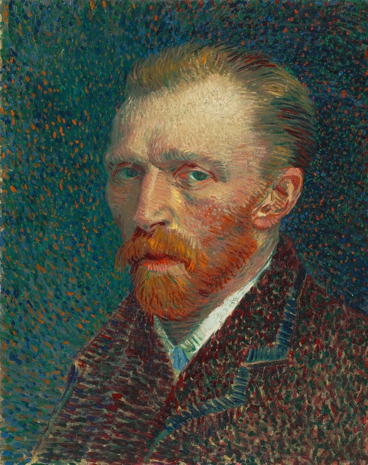
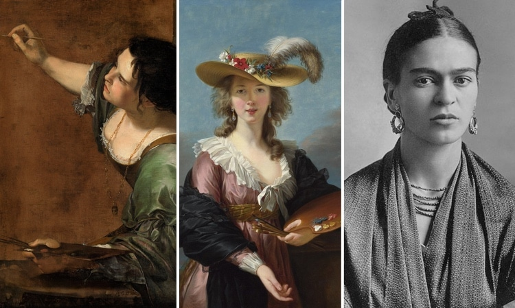

So, who are the most famous artists? While you can probably guess the names of a few, some of the others may be new to you. Renaissance masters Michelangelo and Leonardo, for instance, are two creative titans whose names are synonymous with art and genius. Likewise, Georgia O'Keeffe and Frida Kahlo are some of the most significant female artists of the 20th century.
The history of art is littered with the names of great men—Leonardo da Vinci, Vincent Van Gogh, Pablo Picasso, etc. But what about the women who have helped shape the world's visual history? As with many other fields, women were historically discouraged from pursuing a career in the arts, yet there are many incredible females who persevered. These famous female artists have more in common than their gender and career path—they are all trailblazers in their own right, with many breaking barriers in their personal and public life.
